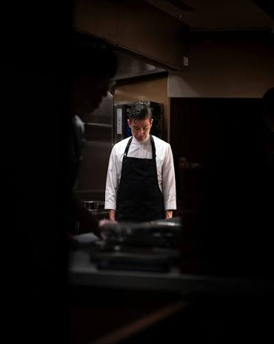

More Than a Restaurant — It's an Experience
At Lumière, we believe food is not just nourishment — it's about emotions, memories, and people. We bring together the finest ingredients, creative techniques, and a passion for perfection to create extraordinary dining experiences.
Every creation presented in our salons is a homage to timeless French discipline viewed through contemporary global curiosity. From our hand-forged silverware to seasonal biodynamic harvests, each encounter is curated with deliberate quiet intimacy.

"Precision is the soul of culinary art."
Only the finest, freshest produce sourced exclusively from artisanal heirloom growers and ethical fisheries.
PURE TERROIRCrafted by world-class chefs whose mastery elevates classic gastronomy through inventive modern flair.
HAUTE CUISINEEvery detail matters — from bespoke candlelight ambience to discreet, intuitive table hospitality.
TAILORED GUEST CARE— LUMIÈRE